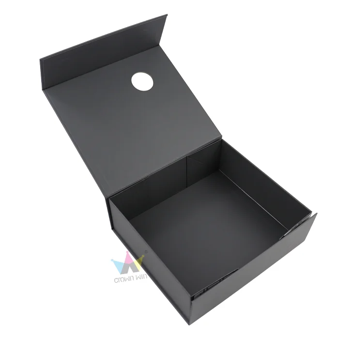
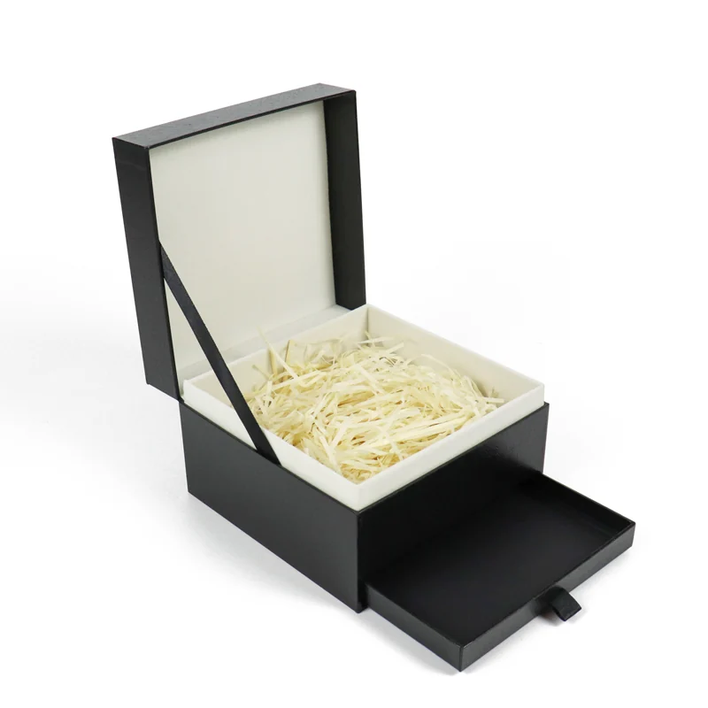

Foldable or Fixed Magnetic Box: Which Fits Your Launch?
Compare the assembled presentation with the practical realities of packing, storage and cross-border delivery before choosing a magnetic gift box structure.
A magnetic closure can make a gift box feel considered and easy to open. But “magnetic box” describes the closure and presentation style, not a single construction. Some boxes arrive assembled with a fixed rigid shape; others can be folded down for packing and storage, then formed before use.
The choice affects more than the appearance of an empty box. It can change how many units fit into storage cartons, how much assembly is needed at the fulfillment stage, how the garment sits inside, and what the recipient experiences when opening the package. There is no universal winner: the right structure depends on the product, launch quantity, operating process and shipping plan.


What a real apparel inquiry asked
A European apparel buyer was planning a limited collection and asked about a matte black magnetic box for a relatively small first run. The buyer wanted to review a sample first. The concept also included a ribbon, a localized branding detail and printed accessories.
The key question was whether a foldable construction could reduce cross-border shipping volume while preserving the premium presentation the launch required. That question could not be answered by appearance alone. The garments had to be considered in their packed condition, and the proposed structure needed to be assessed for assembly, fit, presentation and shipping.
Case note: This article is based on an anonymized buyer inquiry. It describes the buyer’s questions and design direction; it does not state that an order was placed, a structure was selected, or shipping savings were achieved.
This is a useful framing for any launch: treat foldability as one design variable in a complete packaging decision. Test the structure alongside the product and fulfillment workflow rather than assuming a smaller flat pack automatically makes the project better.
Foldable vs. fixed magnetic boxes at a glance
| Decision factor | Foldable magnetic box | Fixed magnetic box |
|---|---|---|
| How it is stored before use | Can be supplied in a flatter form, depending on the construction and packing method. | Usually occupies its assembled shape in storage and transit. |
| Work before presenting the product | May require forming or assembly; confirm the steps and who will do them. | May arrive ready to fill, though inserts and accessories still need to be placed. |
| Shipping comparison | Potentially lower packed volume for some designs; actual carton count and freight basis must be quoted. | May use more volume because the box remains assembled; compare the real packed dimensions. |
| Presentation review | Check that folding and assembly produce clean corners, alignment and a reliable magnetic closure. | Check the assembled appearance, lid alignment and closure in the delivered format. |
| Best validation method | Assemble the sample using the intended process, then pack the real contents. | Load the sample as it will be fulfilled and review the recipient-facing presentation. |
These are typical points to investigate, not guarantees about every design. A supplier should confirm how the specific box is constructed, how it is packed for shipment, what assembly is required, and what is included in the quoted price.
When a foldable box may be a better fit
A foldable structure is worth evaluating when storage or shipment volume is a meaningful concern, especially if boxes are shipped empty to a separate fulfillment location. The potential benefit depends on the final packed dimensions and shipment plan; it should be calculated from the supplier’s packing data rather than assumed from the word “foldable.”
Check the assembly workflow
Ask for a sample and assemble it as the people handling the launch would. Record each step: forming the walls, securing any adhesive areas, positioning the lid, and placing the product and accessories. Confirm whether assembly requires tools, extra materials or special handling, and estimate the time per box with the actual team.
Also check that repeated assembly is practical for your expected run. If the box is being assembled at a warehouse or by a fulfillment partner, share the instructions and sample with that team before final approval. A structure that looks straightforward in a product photo may need a clearer process once many units are being packed.
Validate the presentation after assembly
Review the box only after it has been assembled and filled. Look at the corners, edges, lid alignment, magnetic closure, ribbon placement and the way the garment is revealed. If the garment is folded into a particular shape, use that same fold in the sample. Add any printed accessories to the review so that their position and visual hierarchy are also checked.
For a limited collection, a prototype can help the team decide whether the practical benefits of a foldable format preserve the intended unboxing moment. If you are also considering a structured insert, see our guide to custom box inserts.
When a fixed box may be a better fit
A fixed structure may suit a project where a ready-formed box is easier to store, fill or present within the available operation. It may also be preferred when the buyer wants to review the assembled form directly throughout the approval process. These are workflow considerations to test, not automatic claims that a fixed box is stronger or more premium.
Because the box occupies its assembled volume before use, request the packed carton dimensions and quantity per carton early. Check whether the storage location can accommodate the cartons and whether the freight estimate uses the same destination and shipping method as the foldable option. If the boxes will be filled at a different location, include the transport of empty packaging in the comparison.
Fill the sample with the actual apparel and accessories. Confirm the usable internal space and how the contents are held in position. For help selecting a format for a gift set, see our guide to choosing a gift box structure.
How to compare both options fairly
Ask for two versions of the same packaging brief, changing only the structure where possible. Keep the garment, packed fold, finished internal dimensions, branding locations, ribbon, printed accessories, quantity and delivery destination consistent. If any item must change between options, list it clearly so that you know what the comparison includes.
Use this side-by-side checklist
- Finished internal and external dimensions
- Board, wrap and surface finish
- Magnet and closure details
- Ribbon and localized branding process
- Printed accessories and their quantities
- How the box is packed for delivery
- Carton size, carton quantity and gross weight
- Assembly steps and labor assumptions
- Sample scope, cost and approval points
- Production lead time and shipping basis
- Destination and any separately quoted charges
- Price at the same order quantity
Compare the full project cost, not only the unit box price. Keep sample charges, packaging production, freight and any assembly work visible as separate lines. The delivered cost should use the same destination and shipping basis for both choices. If you need to compare multiple order quantities too, our guide to comparing packaging quantity tiers can help keep that comparison consistent.
What the sample should prove
A sample should answer the open questions that could change the decision. For this apparel concept, a practical review can include:
- Fit: Place the garment in its intended folded condition and check the internal dimensions, clearances and final arrangement.
- Assembly: For the foldable option, follow the proposed instructions and note any difficult or inconsistent steps.
- Closure: Open and close the box repeatedly; check that the lid aligns and the magnet holds as intended.
- Branding: Review the matte black finish, localized brand detail, ribbon and printed accessories together under normal viewing conditions.
- Handling: Move the filled sample as it would be handled during fulfillment and delivery, then inspect whether contents shift or presentation changes.
- Carton plan: Confirm how each option will be packed and record the dimensions and quantity used for freight estimation.
A prototype review is a design check; it is not by itself proof of shipping performance. If the package needs to meet a particular handling or transit requirement, define the test and acceptance criteria with the supplier before production.
Common comparison mistakes
- Assuming foldable means cheaper delivery. Ask for actual packed carton data and a comparable freight quote.
- Comparing an assembled sample with a flat pack. Assemble the foldable version before judging its appearance and closure.
- Ignoring labor. A packaging format changes who performs the preparation and how long it takes.
- Changing several details at once. Keep branding, accessories, dimensions and quantities aligned so the structure is the main variable.
- Approving the empty box only. Test the garment and every included printed accessory in the package.
- Relying on a reference photo. Use a physical sample to review construction, fit and finish before confirming the production specification.
Frequently asked questions
Does a foldable magnetic box always reduce shipping cost?
No. It may reduce the packed volume for a particular construction, but the result depends on carton dimensions, packing quantity, destination and freight basis. Request and compare the actual carton data and shipping estimates for both options.
Is a fixed magnetic box always more premium?
Not necessarily. Premium presentation depends on the complete design, materials, finish, fit and execution. Review assembled samples with the actual product before deciding which structure supports the brand experience.
Should I request a sample before choosing?
For a launch where presentation and fit matter, a sample is a practical way to compare the structures. Ask the supplier to state what the sample includes and which details it represents, then test assembly, closure, product fit and branding.
What information should I send for a quote?
Share the product dimensions and packed arrangement, target box dimensions if known, quantity, reference images, desired finishes, branding locations, accessories, destination and preferred timing. Mark any undecided details so the quote can identify its assumptions.
Make the structure decision with a real sample
For the European apparel inquiry, the central trade-off was clear: explore whether a foldable magnetic box could help with cross-border shipping while retaining the launch presentation. The next useful step is to compare both structures against the same garment, branding brief, quantity and destination, then review samples and packed-carton details.
If you are planning a similar launch, prepare your product dimensions, quantity range, destination and reference design. Crown Win can help organize the details needed to discuss a custom magnetic gift box concept.
Planning a custom box? Send the product dimensions, packed layout, target quantity and delivery destination through our quote request page. You can also review our materials and finishes before preparing the brief.